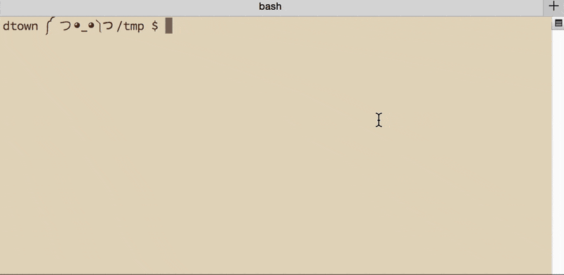
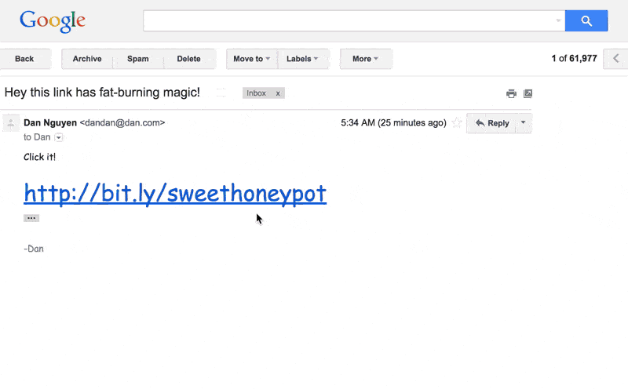
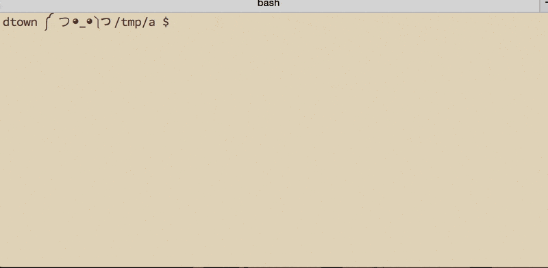
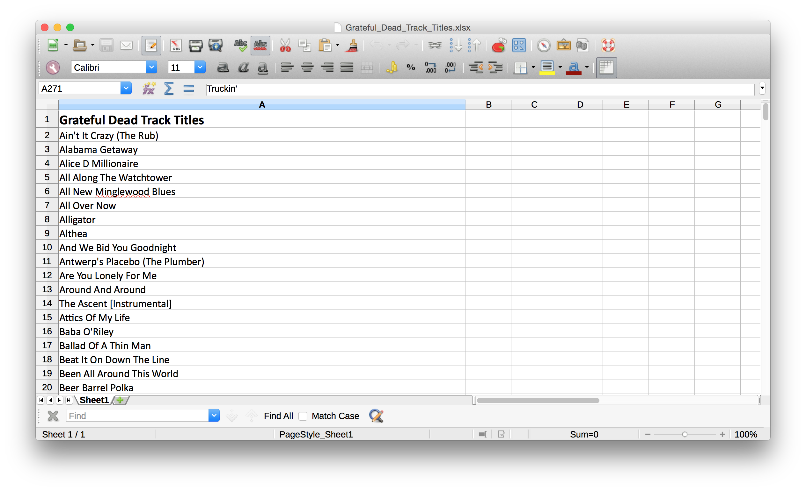
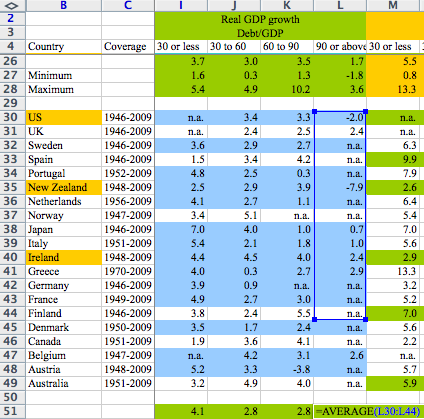
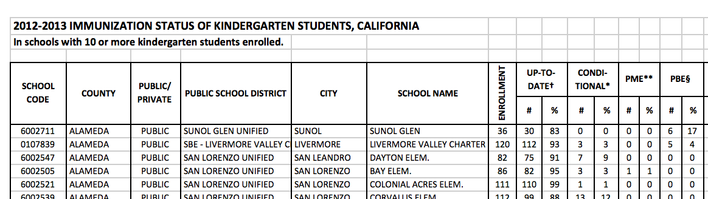
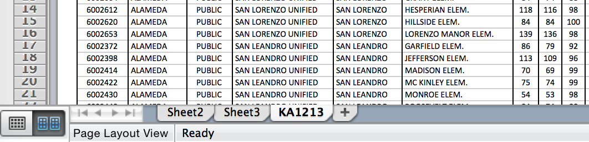

<!doctype html>
<html lang="en">

	<head>
		<meta charset="utf-8">

		<title>Mundane Programming at SRCCON 2015</title>

		<meta name="description" content="A framework for easily creating beautiful presentations using HTML">
		<meta name="author" content="Hakim El Hattab">

		<meta name="apple-mobile-web-app-capable" content="yes" />
		<meta name="apple-mobile-web-app-status-bar-style" content="black-translucent" />

		<meta name="viewport" content="width=device-width, initial-scale=1.0, maximum-scale=1.0, user-scalable=no">

		<link rel="stylesheet" href="reveal.js/css/reveal.css">
		<link rel="stylesheet" href="reveal.js/css/theme/solarized.css" id="theme">

    <!-- our own css -->
    <link rel="stylesheet" href="styles/mystyles.css">


		<!-- For syntax highlighting -->
		<link rel="stylesheet" href="reveal.js/lib/css/zenburn.css">

		<!-- If the query includes 'print-pdf', use the PDF print sheet -->
		<script>
			document.write( '<link rel="stylesheet" href="reveal.js/css/print/' + ( window.location.search.match( /print-pdf/gi ) ? 'pdf' : 'paper' ) + '.css" type="text/css" media="print">' );
		</script>

		<!--[if lt IE 9]>
		<script src="reveal.js/lib/js/html5shiv.js"></script>
		<![endif]-->

<script>
  (function(i,s,o,g,r,a,m){i['GoogleAnalyticsObject']=r;i[r]=i[r]||function(){
  (i[r].q=i[r].q||[]).push(arguments)},i[r].l=1*new Date();a=s.createElement(o),
  m=s.getElementsByTagName(o)[0];a.async=1;a.src=g;m.parentNode.insertBefore(a,m)
  })(window,document,'script','//www.google-analytics.com/analytics.js','ga');

  ga('create', 'UA-64284356-1', 'auto');
  ga('send', 'pageview');
</script>


	</head>

	<body>

		<div class="reveal">

            <div class="slides">

                
<section data-markdown data-separator="^\n---\n$" data-separator-vertical="^\n--\n$" data-notes="^Note:">
<script type="text/template">
## Become a Better Programmer Through
# Mundane Programming <!-- .element: class="fragment" -->


</script>
</section>

<section data-markdown data-separator="^\n---\n$" data-separator-vertical="^\n--\n$" data-notes="^Note:">
<script type="text/template">
## SRCCON 2015

Presented by Dan Nguyen and Geoff Hing 

Notes: [http://mzl.la/1LxjmGb](http://mzl.la/1LxjmGb)

Streaming transcript: [http://bit.ly/1CvZoTJ](http://bit.ly/1CvZoTJ)

Find examples here: [mundaneprogramming.github.io](http://mundaneprogramming.github.io/)

These slides: [http://mundaneprogramming.github.io/slides/](http://mundaneprogramming.github.io/slides/)

</script>
</section>

<section data-markdown data-separator="^\n---\n$" data-separator-vertical="^\n--\n$" data-notes="^Note:">
<script type="text/template">
> You, using a pen and paper, can do anything a computer can; you just can’t do those things billions of times per second. And those billions of tiny operations add up. 

[What is Code?](http://www.bloomberg.com/graphics/2015-paul-ford-what-is-code/) - Paul Ford for Bloomberg.

Note:
Ask participants for examples of programming tasks they've imagined, but haven't started or that they started and didn't finish to surface how programming tends to evoke big, ambitious projects instead of mundane ones.


</script>
</section>

<section data-markdown data-separator="^\n---\n$" data-separator-vertical="^\n--\n$" data-notes="^Note:">
<script type="text/template">


> _If you can't code for yourself...how in the hell you gonna code for somebody else?_  
> RuPaul (paraphrased), on _[RuPaul's Drag Race](http://www.logotv.com/shows/rupauls_drag_race/)_

</script>
</section>

<section data-markdown data-separator="^\n---\n$" data-separator-vertical="^\n--\n$" data-notes="^Note:">
<script type="text/template">
## What is Mundane?

- Anything you're doing repeatedly and mindlessly is a _great_ target.
- Program for something you've _already_ done.
- Have an immediate, concrete goal.


---


> My brother in law has a "habit" of going to jail. All. The. Time. My wife wants to know when it happens, so I setup a script to poll the local jail inmate rosters, and send me an email when his name shows up. It works pretty well.

Top-voted answer to: [How do you use python to automate tasks in life or at work?](http://www.reddit.com/r/Python/comments/308ucq/how_do_you_use_python_to_automate_tasks_in_life/)


--

> Lincoln Hall only holds about 500 people, so Craigslist postings were few and far between. When a post did pop up, I always ended up seeing it a couple hours after it was posted and was too late - the tickets had been sold. Noticing that my frustration was beginning to grow, __I figured it was time to automate my Craigslist searches for tickets.__


[Scraping Craigslist for sold out concert tickets (gregreda.com)](http://www.gregreda.com/2014/07/27/scraping-craigslist-for-tickets/) 


</script>
</section>

<section data-markdown data-separator="^\n---\n$" data-separator-vertical="^\n--\n$" data-notes="^Note:">
<script type="text/template">
## Aim small

The hardest thing for novice programmers is to not _just_ troubleshooting cryptic error messages...

But to know what the _correct_ result is supposed to have been, rather than just the "whew, nothing broke!"-type errors...which can be just as deadly.


--

## Start with the toys

On Linux or OS X, try editing your `~/.bash_profie` or `~/.bashrc` file, respectively, and add useful functions:

~~~sh
# Put a monster in the prompt
export PS1="\u ༼ つ◕_◕༽つ\w $ "
# change the background color of the Terminal
change_bg(){
  osascript -e "tell application \"Terminal\" to set background color of window 1 to $1"
}
go_py(){
  change_bg '{42000, 50000, 40000, 50000}'
  export PS1="\u ～～～(╹◡╹) \w $ "
}
~~~


--

These may seem like trivial kinds of scripting, but it is _essential_ practice in getting more cognitively comfortable with the often unforgiving syntax of programming languages.

--

As you get more comfortable, look to creating more useful functions that are still low-risk, low-yield. This one turns a movie file into a GIF:

~~~sh
quickiegiffie()
{
  # example:  gifify somemovie.mov someimage.gif
  # uses gifify to convert movie file into GIF https://github.com/jclem/gifify/
  # at 20fps at 2x speed, resize to 800px wide
  gifify -s 2 -r 20 $1 -o $2 --resize 800:-1

}
~~~


--

No task is too small to practice on.

--

If you run out of small tools to build for yourself, then tackle side projects that are interesting, but not life/deadline-dependent.

</script>
</section>

<section data-markdown data-separator="^\n---\n$" data-separator-vertical="^\n--\n$" data-notes="^Note:">
<script type="text/template">
## Downloading a URL


Nothing wrong with the old-fashioned browser way:


--

But try it at the command-line with [__curl__](http://curl.haxx.se/):




--

Sometimes you don't _want_ a browser &ndash; they can do _too_ much:




--

Programming is about knowing _exactly what you want_ and having the computer do _exactly that_





--

## wget


This is a little more higher level than __curl__, [and has been used to annoy the NSA](http://www.nytimes.com/2014/02/09/us/snowden-used-low-cost-tool-to-best-nsa.html), but it's simpler than __Save As..__ via browser.


</script>
</section>

<section data-markdown data-separator="^\n---\n$" data-separator-vertical="^\n--\n$" data-notes="^Note:">
<script type="text/template">
## Altering tabular data 



--


## Excel is not that bad

Don't get me wrong, Excel (or any other modern spreadsheet) is the most ubiquitous, bang-for-your buck tool that you can learn.

But its designers can't account for all of the weird, sloppy ways that data gets transmitted <!-- .element: class="fragment" -->

--

And how do you describe or replicate those steps?

> Click in the first cell. Delete the contents. Type "title". Add a column before the first column ...

--

[How to avoid making an Excel mistake like Rogoff and Reinhart - Quartz (qz.com)](http://qz.com/75119/how-to-avoid-making-an-excel-mistake-like-rogoff-and-reinhart/) 



--

## Make Reproducibility Work For You


Reproducibility, aka _replication_, is considered an _ideal_ in the pursuit of scientific research, but [is often too burdensome to be made a requirement](http://www.nature.com/news/first-results-from-psychology-s-largest-reproducibility-test-1.17433):

--

And this is key to making things __automatable_

...but you don't have to go full automation. Take it one step at a time. At the very least, you'll be able to stop on a mini-project and, when you can get back to it, start exactly where you were before.

--

Command line "programming"

~~~sh
# Convert Excel to CSV using in2csv, part of the awesome csvkit
in2csv ~/Downloads/Grateful_Dead_Track_Titles.xlsx |\
# Strip the first line of the file, an annoying document title
tail -n +2 |\
# Add a proper column header
sed -e '1s/^/title\
/' |\
# Add a line-number column to act as a quick-and-dirty primary key,
# because reconcile-csv needs it
csvcut -l > grateful_dead_track_titles.csv
~~~

</script>
</section>

<section data-markdown data-separator="^\n---\n$" data-separator-vertical="^\n--\n$" data-notes="^Note:">
<script type="text/template">


## California education data sprawl

The CDE has a wealth of data, which -- often for understandable reason -- is scattered across different files and formats.

- Here's a [dozen years of vaccination rates in California kindergartens](http://www.cdph.ca.gov/programs/immunize/pages/immunizationlevels.aspx)
- Here's 15 years worth of [ACT, SAT, and AP test scores](http://www.cde.ca.gov/ds/sp/ai/) (i.e. 45 sheets in total)

--


--


Just _downloading_ these files is a pain. So start off with a limited goal: automate the _listing_ of the data URLs:

~~~py
import requests
from lxml import html
SITEURL = 'http://www.cdph.ca.gov/programs/immunize/pages/immunizationlevels.aspx'
resp = requests.get(SITEURL)
txt = resp.text
doc = html.fromstring(txt)
links = doc.cssselect("a")
for link in links:
  print(link.attrib['href'])
~~~


--

Doh! An error:

~~~
#
#
#middle_column
#pagefooter
/pages/accessibility.aspx
---------------------------------------------------------------------------
KeyError                                  Traceback (most recent call last)
<ipython-input-5-19710c9aeb70> in <module>()
      7 links = doc.cssselect("a")
      8 for link in links:
----> 9   print(link.attrib['href'])

lxml.etree.pyx in lxml.etree._Attrib.__getitem__ (src/lxml/lxml.etree.c:62258)()

KeyError: 'href'
~~~


--

Get a little better at working with HTML (in this case, learn the Xpath selector language):

~~~py
import requests
from lxml import html
SITEURL = 'http://www.cdph.ca.gov/programs/immunize/pages/immunizationlevels.aspx'
doc = html.fromstring(requests.get(SITEURL).text)
links = doc.xpath("//a/@href")
for link in links:
  print(link)
~~~


--

Too much junk:

~~~
/PROGRAMS/Pages/default.aspx',
 '/programs/immunize/Pages/Default.aspx',
 '/programs/immunize/Pages/ImmunizationLevels.aspx',
 '/programs/immunize/Documents/2014-15%20CA%20Child%20Care%20Immunization%20Assessment.pdf',
 '/programs/immunize/Documents/2014-15%20Child%20Care%20and%20School%20Fact%20Sheet.pdf',
 '/programs/immunize/Documents/2014-2015%20CA%20Child%20Care%20Data.pdf',
 '/programs/immunize/Documents/2014-2015%20CA%20Child%20Care%20Data.xlsx',
~~~

--

Learn how to filter (i.e. conditional statements) and how to better parse URLs:

~~~py
import requests
from lxml import html
from urllib.parse import urljoin
SITEURL = 'http://www.cdph.ca.gov/programs/immunize/pages/immunizationlevels.aspx'
doc = html.fromstring(requests.get(SITEURL).text)
for link in doc.xpath("//a/@href"):
  if 'xls' in link and 'Kinder' in link:
      url = urljoin(SITEURL, link)
      print(url)
~~~


--

Now you have links you can actually _click_ on and download manually. It's a start:

~~~py
http://www.cdph.ca.gov/programs/immunize/Documents/2014-15%20CA%20Kindergarten%20Data.xlsx
http://www.cdph.ca.gov/programs/immunize/Documents/2013-2014%20CA%20Kindergarten%20Data.xls
http://www.cdph.ca.gov/programs/immunize/Documents/2012-2013%20California%20Kindergarten%20Data.xls
http://www.cdph.ca.gov/programs/immunize/Documents/2011-2012%20CA%20Kindergarten%20Data.xls
~~~


--

That's one phase! You can save that script into a file and re-run it to your heart's content.

--

What's in these files?

For the [2012-2013 vaccination file](http://www.cdph.ca.gov/programs/immunize/Documents/2012-2013%20California%20Kindergarten%20Data.xls), we see that a plaintext translation of the spreadsheet won't be good enough. 


--

Someone has to hand-remove those leading blank lines, possibly from _every single page_:




--

Oh, and whoever created this Excel workbook decided to use the __third__ sheet for the data, when most people expect it in the __first__. So that's yet another detail.





--

...And that's not even the worst of the inconsistencies between yearly datasets. The data columns have a different structure post-2012, reflecting a possible change in what they measure.

(the [high school test score data is even messier](http://www.cde.ca.gov/ds/sp/ai/))

--

But that's data in the real world, just an approximation of human efforts to observe and evaluate complex topics.

Sample scripts:

- [caschoolsimmunization_fetch.py](https://github.com/mundaneprogramming/mundaneprogramming.github.io/blob/master/code/caschoolsimmunization_fetch.py)

- [caschoolsimmunization_collate.py](https://github.com/mundaneprogramming/mundaneprogramming.github.io/blob/master/code/caschoolsimmunization_collate.py)


</script>
</section>

<section data-markdown data-separator="^\n---\n$" data-separator-vertical="^\n--\n$" data-notes="^Note:">
<script type="text/template">

## Don't be a slave to social media

[I Nuked My Twitter Feed And You Should Too](http://www.buzzfeed.com/charliewarzel/i-nuked-my-twitter-feed-and-you-should-too) - Charlie Warzel

> There’s no reliable way to bulk unfollow, and besides, I wanted to savor the experience. The web client is the easiest way to go about this (on Twitter’s mobile every unfollow asks for confirmation) but it’s still a pain. 

--

## So much pain...

> The “unfollow” button isn’t very responsive to clicks and sometimes it took three or four tries to go through. This led to a lot of quick unfollow/refollow clicks, which would send a “Charlie Warzel is now following you on Twitter!” emails to friends, co-workers, family. 

--

> It’s a process that seems intentionally designed to be frustrating and it’s a pretty good deterrent for bulk unfollows. 

> Oh, and it took nearly three and a half hours. <!-- .element: class="fragment" -->

...so ...much <!-- .element: class="fragment" -->

...carpal tunnel <!-- .element: class="fragment" -->


--

## Repetitive work is good practice time

Even when it's as trivial as Twittery vanity projects.


--

## Combining tools

- [csvkit](https://csvkit.readthedocs.org/en/0.9.1/)
- [t (ruby) gem](https://github.com/sferik/t)


--

When an API and service are big, you can expect the authentication process to be somewhat of a bear. The [t gem's documentation](https://github.com/sferik/t/blob/master/README.md) has a nice walkthrough. 

But the bottom line is you can't just log in, programmatically, with your username and password.


--

When it's set up:

~~~sh
t whoami   # return information about authenticated user
~~~

    ID           14335332
    Since        Apr  8  2008 (7 years ago)
    Last update  @yrochat yup (33 minutes ago)
    Screen name  @dancow
    Name         Dan Nguyen      ؚ
    Tweets       23,508
    Favorites    6,333
    Listed       702
    Following    6,216
    Followers    8,118
    Bio          Programming, writing, photography, investigations. Computational Journalism Lecturer for @Stanford. Past: @Skift, @ProPublica, @sacbee_news.
    Location     Stanford, California
    URL          http://danwin.com

--

Just as there are many ways to download files outside of the web browser interface, an API lets a user/developer design their own interfaces:

~~~sh
t update "Hey world I'm at the command line" # send tweet
~~~

--

Make a directory to dump our work in:

~~~sh
mkdir -p /tmp/twits
cd /tmp/twits
~~~


--

Find out our most popular followers with [csvsort](https://csvkit.readthedocs.org/en/0.9.1/scripts/csvsort.html):

~~~sh
t followers --csv > followers.csv
csvsort -n followers.csv
csvsort -c 8 -r followers.csv 
~~~

--

Being able to filter is _vital_; humans can't be expected to interpret a massive wall of text like Neo. 


--

Here we use `csvkit` to filter the columns, then Unix-standard `head` to reduce the number of lines.

~~~sh
csvsort -c 8 -r followers.csv | csvcut -c 10,9,8
csvsort -c 8 -r followers.csv | csvcut -c 10,9,8 | head -n 10 
~~~


--

## Basically a bot

Test run

~~~sh
csvsort -c 8 -r followers.csv | csvcut -c 9 | head -n 3 |
while read -r line; do
  echo "I love you @$line"
done
~~~

Now tweet


~~~sh
csvsort -c 8 -r followers.csv | csvcut -c 9 | head -n 3 |
while read -r line; do
  t update "I love you, @$line"
done
~~~

--

## Unfollow en masse

~~~sh
t leaders --csv > leaders.csv
head -n 10 leaders.csv
t unfollow @user
~~~

--

## Be as granular/petty as you want

Follow the least popular of my non-followers:

~~~sh
csvsort -c 8 leaders.csv | head -n 100
# avoid angering stanford
csvsort -c 8 leaders.csv | head -n 100 | csvgrep -c 13 -i -m 'Stanford'
~~~

</script>
</section>

<section data-markdown data-separator="^\n---\n$" data-separator-vertical="^\n--\n$" data-notes="^Note:">
<script type="text/template">
## Uncage yourselves


Note:
Ask participants for examples of "mundane" programming tasks, real or imagined.

</script>
</section>


            </div>

		</div>

		<script src="reveal.js/lib/js/head.min.js"></script>
		<script src="reveal.js/js/reveal.js"></script>

		<script>

			// Full list of configuration options available here:
			// https://github.com/hakimel/reveal.js#configuration
			Reveal.initialize({
				controls: true,
				progress: true,
				history: true,
				center: true,

				theme: Reveal.getQueryHash().theme, // available themes are in /css/theme
				transition: 'default', // default/cube/page/concave/zoom/linear/fade/none

                

				// Optional libraries used to extend on reveal.js
				dependencies: [
					{ src: 'reveal.js/lib/js/classList.js', condition: function() { return !document.body.classList; } },
					{ src: 'reveal.js/plugin/markdown/marked.js', condition: function() { return !!document.querySelector( '[data-markdown]' ); } },
					{ src: 'reveal.js/plugin/markdown/markdown.js', condition: function() { return !!document.querySelector( '[data-markdown]' ); } },
					{ src: 'reveal.js/plugin/highlight/highlight.js', async: true, callback: function() { hljs.initHighlightingOnLoad(); } },
					{ src: 'reveal.js/plugin/zoom-js/zoom.js', async: true, condition: function() { return !!document.body.classList; } },
                    
					{ src: 'reveal.js/plugin/notes/notes.js', async: true, condition: function() { return !!document.body.classList; } }
                    
                    
				]
			});

		</script>

	</body>
</html>
